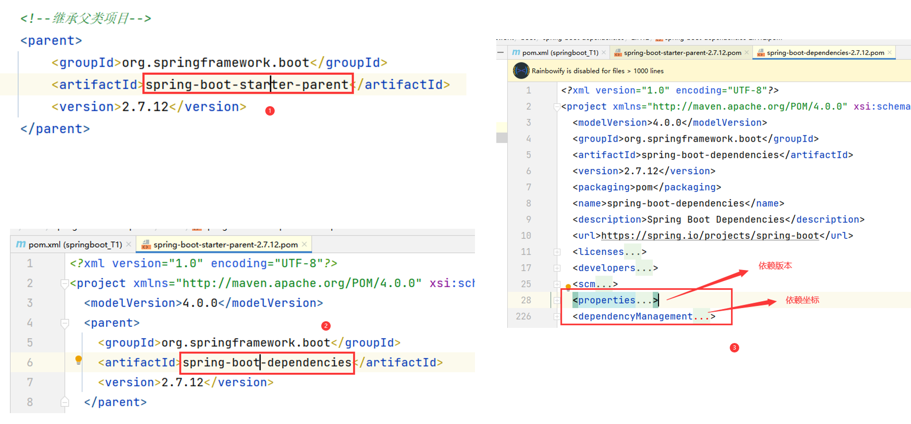
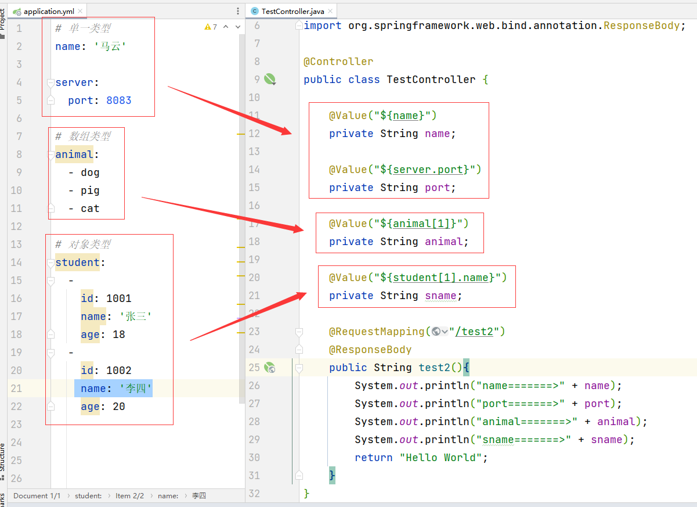
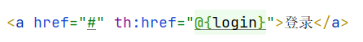

SpringBoot基础教程
SpringBoot基础教程一、SpringBoot简介二、搭建SpringBoot环境（重点）1、手动搭建1.1 继承SpringBoot父类项目1.2 引入Web支持1.3 创建启动类（引导类）1.4 创建Web请求1.5 测试效果2、IDEA自动创建（需要联网）三、SpringBoot配置文件类型1、properties类型2、yaml类型2.1 yaml语法规范2.2 yaml文件配置2.3 yaml存储信息及读取信息3、SpringBoot配置文件优先级四、SpringBoot整合第三方技术4.1 SpringBoot整合junit4.1.1 实现步骤4.1.2 案例演示4.2 SpringBoot整合MyBatis4.2.1 创建模块，引入支持4.2.2 配置数据源4.2.3 功能测试内容补充：lombok4.3 SpringBoot整合Druid4.4 SpringBoot整合MyBatis Plus4.4.1 创建模块，引入支持4.4.2 配置数据源4.4.3 功能测试五、Thymeleaf模板引擎1、SpringBoot静态资源2、Thymeleaf 概述2、Thymeleaf 模板引擎引入3、Thymeleaf 语法（常用）3.1 标准表达式3.2 th标签表达式六、SpringBoot实现基本增删改查1、数据库准备2、创建项目，引入资源3、设置配置文件4、开发具体功能4.1 后端开发4.1.1 entity层4.1.2 dao层4.1.3 service层4.1.4 controller层4.2 前端开发4.2.1 主界面4.2.2 新增界面4.2.3 修改界面
一、SpringBoot简介
SpringBoot是由Pivotal团队提供的全新框架，其设计目的是用来简化Spring应用的初始搭建以及开发过程。
官网地址：https://spring.io/
SpringBoot主要帮助我们优化Spring开发中存在的繁琐情况：
依赖设置繁琐
配置信息繁琐
SpringBoot主要包括如下优点：
简化依赖配置，提供最优的依赖搭配方案 
自动配置，简化Spring及其整合第三方框架的配置信息
内置常用Web服务器，简化服务器配置

二、搭建SpringBoot环境（重点）
1、手动搭建
官网地址：SpringBoot手动搭建官方教程)
1.1 继承SpringBoot父类项目
在
pom.xml中配置
<!--继承父类项目--><parent> <groupId>org.springframework.boot</groupId> <artifactId>spring-boot-starter-parent</artifactId> <version>2.7.12</version></parent>1.2 引入Web支持
在
pom.xml中配置
xxxxxxxxxx<!--引入Web支持--><dependency> <groupId>org.springframework.boot</groupId> <artifactId>spring-boot-starter-web</artifactId></dependency>1.3 创建启动类（引导类）
在
co.ynnz下创建Java类：MyApplication.java
xpackage com.ynnz;
import org.springframework.boot.SpringApplication;import org.springframework.boot.autoconfigure.SpringBootApplication;
// 启动类（引导类）public class MyApplication { public static void main(String[] args) { SpringApplication.run(MyApplication.class, args); }}1.4 创建Web请求
在
com.ynnz.controller下创建控制类：TestController.java
xxxxxxxxxxpackage com.ynnz.controller;
import org.springframework.stereotype.Controller;import org.springframework.web.bind.annotation.RequestMapping;import org.springframework.web.bind.annotation.ResponseBody;
public class TestController {
("/test") public String test(){ return "Hello SpringBoot!!!"; }}1.5 测试效果
启动引导类

在浏览器测试
在浏览器使用如下访问地址进行测试：
http://localhost:8080/请求
2、IDEA自动创建（需要联网）
三、SpringBoot配置文件类型
1、properties类型
在springboot中，配置文件名字一般为
application
application.properties

2、yaml类型
yaml是一种语言类型，主要用于作为配置文件，它的特点：以
数据为中心
yaml语言的后缀：
.yaml
.yml
2.1 yaml语法规范
区分大小写
使用
空格作为缩进，表示层次结构（空格数量不重要，只要相同层级对齐即可）注释使用
#属性名后面的
:和属性值之间需要使用空格隔开
2.2 yaml文件配置
.yaml和.yml语法几乎一模一样，在实际开发中，一般使用.yml的较多
2.3 yaml存储信息及读取信息
方式一：使用注解
@Value读取基本语法：
@Value(${一级属性名.二级属性名......})如果读取数组信息，使用
下标获取数组信息

方式二：使用
Environment类读取
3、SpringBoot配置文件优先级
application.properties>>application.yml>>application.yaml
四、SpringBoot整合第三方技术
4.1 SpringBoot整合junit
4.1.1 实现步骤
引入资源（
pom.xml）xxxxxxxxxx<!--测试--><dependency><groupId>org.springframework.boot</groupId><artifactId>spring-boot-starter-test</artifactId><scope>test</scope></dependency>创建测试类、测试方法
xxxxxxxxxxpackage com.ynnz;import org.junit.jupiter.api.Test;import org.springframework.boot.test.context.SpringBootTest;// 测试类public class StudentTest {// 测试方法public void test1(){System.out.println("Hello World");}}
4.1.2 案例演示
创建业务接口及实现类，在SpringBoot测试类中进行测试
在
com.ynnz.service下创建计算器接口ComputerService.javaxxxxxxxxxxpackage com.ynnz.service;public interface ComputerService {// 加法int add(int num1, int num2);// 减法int reduce(int num1, int num2);}在
com.ynnz.service.impl下创建计算器实现类ComputerServiceImpl.javaxxxxxxxxxxpackage com.ynnz.service.impl;import com.ynnz.service.ComputerService;import org.springframework.stereotype.Service;public class ComputerServiceImpl implements ComputerService {// 加法public int add(int num1, int num2) {return num1 + num2;}// 减法public int reduce(int num1, int num2) {return num1 - num2;}}创建测试类
ComputerTest进行测试xxxxxxxxxxpackage com.ynnz;import com.ynnz.service.ComputerService;import org.junit.jupiter.api.Test;import org.springframework.beans.factory.annotation.Autowired;import org.springframework.boot.test.context.SpringBootTest;public class ComputerTest {private ComputerService computerService;// 测试加法public void testAdd(){int num = computerService.add(10, 22);System.out.println("num =======> " + num);}// 测试减法public void testReduce(){int num = computerService.reduce(77, 18);System.out.println("num =======> " + num);}}
4.2 SpringBoot整合MyBatis
4.2.1 创建模块，引入支持
如果手动搭建，需要在
pom.xml中引入如下坐标：（即如上勾选的两个选项导入的资源）xxxxxxxxxx<!--引入mybatis支持--><dependency><groupId>org.mybatis.spring.boot</groupId><artifactId>mybatis-spring-boot-starter</artifactId><version>2.3.1</version></dependency><!--引入jdbc支持--><dependency><groupId>com.mysql</groupId><artifactId>mysql-connector-j</artifactId><scope>runtime</scope></dependency>
4.2.2 配置数据源
在application.yml中配置数据源信息：
xxxxxxxxxx# 配置数据源spring datasource driver-class-namecom.mysql.jdbc.Driver urljdbcmysql//localhost3306/task_db usernameroot password123456至此，SpringBoot整合MyBatis完毕。
4.2.3 功能测试
创建实体类
数据表结构如下：
在
com.ynnz.entity下创建实体类User.javaxxxxxxxxxxpackage com.ynnz.entity;public class User {private int id;private String account;private String password;public int getId() {return id;}public void setId(int id) {this.id = id;}public String getAccount() {return account;}public void setAccount(String account) {this.account = account;}public String getPassword() {return password;}public void setPassword(String password) {this.password = password;}public String toString() {return "User{" +"id=" + id +", account='" + account + '\'' +", password='" + password + '\'' +'}';}}
内容补充：lombok
lombok是一个Java类库，提供了相应注解帮助简化实体类的开发，使用时需要导入坐标：
xxxxxxxxxx<dependency><groupId>org.projectlombok</groupId><artifactId>lombok</artifactId></dependency>
提示：SpringBoot提供了lombok，所以不需要指定版本。非SpringBoot项目需要自行指定版本。
常用注解：
@Data：为实体类设置对应的get/set方法，toString()方法，hashCode()方法，equals()方法
@NoArgsConstructor：为实体类设置对应的无参构造方法
@AllArgsConstructor：为实体类设置对应的全参构造方法如上实体类可修改为：
xxxxxxxxxxpackage com.ynnz.entity;import lombok.Data;public class User {private int id;private String account;private String password;}
编写数据持久层代码
在
com.ynnz.dao下创建接口UserDao.javaxxxxxxxxxxpackage com.ynnz.dao;import com.ynnz.entity.User;import org.apache.ibatis.annotations.Mapper;import org.apache.ibatis.annotations.Select;import java.util.List;public interface UserDao {// 查询所有用户信息("select * from tb_user")List<User> queryUsers();}编写测试代码进行测试
xxxxxxxxxxpackage com.ynnz;import com.ynnz.dao.UserDao;import com.ynnz.entity.User;import org.junit.jupiter.api.Test;import org.springframework.beans.factory.annotation.Autowired;import org.springframework.boot.test.context.SpringBootTest;import java.util.List;public class UserTest {private UserDao userDao;// 测试查询功能public void testQueryUsers() {List<User> list = userDao.queryUsers();System.out.println(list);}}
4.3 SpringBoot整合Druid
整合Druid只需要在4.2的基础上，添加Druid依赖（
druid-spring-boot-starter），并修改一下配置文件即可
引入Druid依赖
xxxxxxxxxx<dependency><groupId>com.alibaba</groupId><artifactId>druid-spring-boot-starter</artifactId><version>1.2.8</version></dependency>修改配置文件
application.yml方式一
xxxxxxxxxx# 配置数据源springdatasourcedriver-class-namecom.mysql.jdbc.Driverurljdbcmysql//localhost3306/task_dbusernamerootpassword123456# 添加数据源类型typecom.alibaba.druid.pool.DruidDataSource方式二
xxxxxxxxxx# 配置数据源springdatasource# 添加druiddruiddriver-class-namecom.mysql.jdbc.Driverurljdbcmysql//localhost3306/task_dbusernamerootpassword123456
4.4 SpringBoot整合MyBatis Plus
4.4.1 创建模块，引入支持
MyBatis Plus暂未被Spring官方收录，所以需要手动引入对应坐标：
xxxxxxxxxx<dependency><groupId>com.baomidou</groupId><artifactId>mybatis-plus-boot-starter</artifactId><version>3.5.2</version></dependency>
4.4.2 配置数据源
在application.yml中配置数据源信息：（也可引入Druid）
xxxxxxxxxx# 配置数据源spring datasource driver-class-namecom.mysql.jdbc.Driver urljdbcmysql//localhost3306/task_db usernameroot password123456至此，SpringBoot整合MyBatis Plus完毕。
4.4.3 功能测试
创建实体类
数据表结构如下：
在
com.ynnz.entity下创建实体类User.javaxxxxxxxxxxpackage com.ynnz.entity;public class User {private int id;private String account;private String password;public int getId() {return id;}public void setId(int id) {this.id = id;}public String getAccount() {return account;}public void setAccount(String account) {this.account = account;}public String getPassword() {return password;}public void setPassword(String password) {this.password = password;}public String toString() {return "User{" +"id=" + id +", account='" + account + '\'' +", password='" + password + '\'' +'}';}}编写数据持久层代码
在
com.ynnz.dao下创建接口UserDao.javaxxxxxxxxxxpackage com.ynnz.dao;import com.baomidou.mybatisplus.core.mapper.BaseMapper;import com.ynnz.entity.User;import org.apache.ibatis.annotations.Mapper;public interface UserDao extends BaseMapper<User> {}编写测试代码进行测试
xxxxxxxxxxpackage com.ynnz;import com.ynnz.dao.UserDao;import com.ynnz.entity.User;import org.junit.jupiter.api.Test;import org.springframework.beans.factory.annotation.Autowired;import org.springframework.boot.test.context.SpringBootTest;import java.util.List;public class UserTest {private UserDao userDao;// 测试查询public void testQuery() {List<User> list = userDao.selectList(null);System.out.println(list);}// 测试新增public void testInsert() {// 准备测试数据User user = new User();user.setId(4);user.setAccount("mayun");user.setPassword("123456");// 新增int count = userDao.insert(user);if(count > 0){System.out.println("新增成功");}}}
测试时，报错：
原因分析：
MyBatis Plus将实体类名直接识别为表名，所以识别到的表名为
user，但实际的表名为tb_user解决方案：
在配置文件
application.yml中设置表名前缀：xxxxxxxxxx# 配置数据表名前缀mybatis-plusglobal-configdb-configtable-prefixtb_
五、Thymeleaf模板引擎
1、SpringBoot静态资源
在SpringBoot中，静态资源（HTML、CSS、JavaScript、图片等）可放置在如下位置，SpringBoot应用能够自动将其识别为根目录：
一般情况下，静态资源放在如上三个目录之一中，推荐使用static。
注意点：在调用css，JavaScript资源时，调用路径
不加public、static、resources。
2、Thymeleaf 概述
Thymeleaf 是一款用于渲染HTML5、XML、XHTML内容的模板引擎，类似于JSP，可以动态渲染页面内容（可以直接在HTML5中进行
判断、循环等操作）。和JSP相比，主要区别如下：
渲染过程不同：
JSP需要通过Tomcat服务器解析（即需要启动整个应用），然后在浏览器进行渲染展示
Thymeleaf渲染的内容可以直接在浏览器进行渲染
文件类型不同：
通过JSP渲染页面内容，文件后缀为
.jsp通过Thymeleaf渲染页面内容，文件后缀为
.html、.xml等
逻辑编写使用语法不同：
JSP实现页面判断、循环等可使用
Java、jstl+EL等实现Thymeleaf实现页面判断、循环
Thymeleaf自带语法实现
SpringBoot 推荐使用 Thymeleaf 进行页面内容渲染。
2、Thymeleaf 模板引擎引入
可以在创建 SpringBoot 项目时直接选择 Thymeleaf 技术，也可以通过导入坐标实现 Thymeleaf 技术引用。
方式1：创建SpringBoot项目时直接勾选
方式2：直接通过Maven坐标引入
x
<dependency><groupId>org.springframework.boot</groupId><artifactId>spring-boot-starter-thymeleaf</artifactId></dependency>
3、Thymeleaf 语法（常用）
使用Thymeleaf，需要引入Thymeleaf标签库：
xxxxxxxxxx<html xmlns:th="http://www.thymeleaf.org">
Thymeleaf模板页面放置在
resources/templates中，模板页面默认为html类型，需要使用控制器请求进行访问。
3.1 标准表达式
变量（逻辑）表达式：
${...}链接表达式：
@{...}
消息表达式：
#{...}
3.2 th标签表达式
设置标签文本值：
th:text条件判断（满足条件显示，否则不显示）：
th:if循环遍历：
th:each设置属性值：
任意属性：
th:attrHTML原生属性：
th:原生属性名
六、SpringBoot实现基本增删改查
1、数据库准备
数据库：
task_db数据表：
bookx-- 建表CREATE TABLE book (id varchar(20) COMMENT '书籍编号',name varchar(30) NOT NULL COMMENT '书籍名称',price decimal(7, 2) NOT NULL COMMENT '书籍价格',type varchar(20) NOT NULL COMMENT '书籍类型',publish varchar(30) NOT NULL COMMENT '出版社',PRIMARY KEY (id));-- 新增数据INSERT INTO book VALUES ('B001', '聊斋志异', 38.80, '古典小说', '人民教育出版社');INSERT INTO book VALUES ('B002', '三国演义', 68.50, '古典小说', '南海出版公司');INSERT INTO book VALUES ('B003', '资本论', 79.00, '社会科学', '商务印书馆');INSERT INTO book VALUES ('B004', '乌合之众', 26.00, '社会科学', '中信出版社');INSERT INTO book VALUES ('B006', '水浒传', 78.00, '古典小说', '清华大学出版社');
2、创建项目，引入资源
需要引用的技术：
web
mybatis
MySQL驱动
Thymeleaf
lombok（选用）
druid（选用）
需要使用
druid时，要手动导入坐标：xxxxxxxxxx<dependency><groupId>com.alibaba</groupId><artifactId>druid-spring-boot-starter</artifactId><version>1.2.15</version></dependency>
3、设置配置文件
application.yml
xxxxxxxxxx# 配置数据源spring datasource druid driver-class-namecom.mysql.cj.jdbc.Driver urljdbcmysql//localhost3306/task_db usernameroot password1234564、开发具体功能
4.1 后端开发
4.1.1 entity层
xxxxxxxxxxpackage com.ynnz.entity;
import lombok.Data;
public class Book { private String id; private String name; private Double price; private String type; private String publish;}4.1.2 dao层
接口
xxxxxxxxxxpackage com.ynnz.dao;import com.ynnz.entity.Book;import org.apache.ibatis.annotations.Mapper;import java.util.List;public interface BookDao {// 查询全部数据List<Book> queryBooks();// 根据id删除数据int deleteBookById(String id);// 新增数据int insertBook(Book book);// 根据id查询数据List<Book> queryBookById(String id);// 修改数据int updateBook(Book book);}映射文件
xxxxxxxxxx<mapper namespace="com.ynnz.dao.BookDao"><resultMap type="com.ynnz.entity.Book" id="BookMap"><result property="id" column="id" jdbcType="VARCHAR"/><result property="name" column="name" jdbcType="VARCHAR"/><result property="price" column="price" jdbcType="NUMERIC"/><result property="type" column="type" jdbcType="VARCHAR"/><result property="publish" column="publish" jdbcType="VARCHAR"/></resultMap><!--查询全部数据--><select id="queryBooks" resultMap="BookMap">select * from book</select><!--根据id删除数据--><delete id="deleteBookById">delete from book where id = #{id}</delete><!--新增数据--><insert id="insertBook">insert into book(id,name, price, type, publish)values(#{id}, #{name}, #{price}, #{type}, #{publish})</insert><!--根据id查询数据--><select id="queryBookById" resultMap="BookMap">select * from book where id = #{id}</select><!--修改数据--><update id="updateBook">update bookset name = #{name},price = #{price},type = #{type},publish = #{publish}where id=#{id}</update></mapper>
4.1.3 service层
接口
xxxxxxxxxxpackage com.ynnz.service;import com.ynnz.entity.Book;import java.util.List;public interface BookService {// 查询全部数据List<Book> queryBooks();// 根据id删除数据int deleteBookById(String id);// 新增数据int insertBook(Book book);// 根据id查询数据List<Book> queryBookById(String id);// 修改数据int updateBook(Book book);}实现类
xxxxxxxxxxpackage com.ynnz.service.impl;import com.ynnz.entity.Book;import com.ynnz.dao.BookDao;import com.ynnz.service.BookService;import org.springframework.stereotype.Service;import java.util.List;import org.springframework.beans.factory.annotation.Autowired;("bookService")public class BookServiceImpl implements BookService {private BookDao bookDao;// 查询所有数据public List<Book> queryBooks(){return bookDao.queryBooks();}// 根据id删除数据public int deleteBookById(String id){return bookDao.deleteBookById(id);}// 新增数据public int insertBook(Book book){return bookDao.insertBook(book);}// 根据id查询数据public List<Book> queryBookById(String id){return bookDao.queryBookById(id);}// 修改数据public int updateBook(Book book){return bookDao.updateBook(book);}}
4.1.4 controller层
xxxxxxxxxxpackage com.ynnz.controller;
import com.ynnz.entity.Book;import com.ynnz.service.BookService;import org.springframework.stereotype.Controller;import org.springframework.ui.Model;import org.springframework.web.bind.annotation.RequestMapping;import java.util.List;import org.springframework.beans.factory.annotation.Autowired;
public class BookController { private BookService bookService; // 查询所有数据 ("/queryBooks") public String queryBooks(Model model){ List<Book> list = bookService.queryBooks(); model.addAttribute("list", list); return "main"; } // 根据id删除数据 ("/deleteBookById") public String deleteBookById(String id){ int count = bookService.deleteBookById(id); if(count > 0){ return "redirect:queryBooks"; } return null; } // 新增数据 ("/insertBook") public String insertBook(Book book){ int count = bookService.insertBook(book); if(count > 0){ return "redirect:queryBooks"; } return null; } // 根据id查询数据 ("/queryBookById") public String queryBookById(Model model, String id){ List<Book> list = bookService.queryBookById(id); model.addAttribute("list", list); return "update"; } // 修改数据 ("/updateBook") public String updateBook(Book book){ int count = bookService.updateBook(book); if(count > 0){ return "redirect:queryBooks"; } return null; } // 跳转新增页面 ("/goInsert") public String goInsert(){ return "insert"; }}4.2 前端开发
4.2.1 主界面
main.html
xxxxxxxxxx<html xmlns:th="http://www.thymeleaf.org"><head> <meta charset="UTF-8"> <title>主界面</title> <link rel="stylesheet" href="bootstrap-3.4.1/css/bootstrap.min.css"> <style> h1,th,td{ text-align: center; } </style></head><body> <div class="container"> <h1>书籍信息管理系统</h1> <br><br> <a href="#" th:href="@{goInsert}"> <button type="button" class="btn btn-warning">新增书籍信息</button> </a> <br><br> <table class="table table-bordered"> <tr> <th>书籍编号</th> <th>书籍名称</th> <th>书籍价格</th> <th>书籍类型</th> <th>出版社</th> <th>操作</th> </tr> <tr th:each="book:${list}"> <td th:text="${book.id}"></td> <td th:text="${book.name}"></td> <td th:text="${book.price}"></td> <td th:text="${book.type}"></td> <td th:text="${book.publish}"></td> <td> <a href="#" th:href="@{queryBookById(id=${book.id})}"> <button type="button" class="btn btn-info">修改</button> </a>  <a href="#" th:href="@{deleteBookById(id=${book.id})}" onclick="if(confirm('您确定删除该条数据吗？')==false){return false;}"> <button type="button" class="btn btn-danger">删除</button> </a> </td> </tr> </table> </div></body></html>4.2.2 新增界面
insert.html
xxxxxxxxxx<html xmlns:th="http://www.thymeleaf.org"><head> <meta charset="UTF-8"> <title>新增页面</title> <link rel="stylesheet" href="bootstrap-3.4.1/css/bootstrap.min.css"> <style> h1{ text-align: center; } .insert{ margin-left: 35%; } </style></head><body> <div class="container"> <h1>新增书籍信息</h1> <br><br> <div class="col-lg-3"></div> <div class="col-lg-6"> <form class="form-horizontal" method="post" th:action="@{insertBook}"> <div class="form-group"> <label class="col-sm-2 control-label">书籍编号</label> <div class="col-sm-10"> <input type="text" name="id" class="form-control" placeholder="请输入书籍编号"> </div> </div> <br> <div class="form-group"> <label class="col-sm-2 control-label">书籍名称</label> <div class="col-sm-10"> <input type="text" name="name" class="form-control" placeholder="请输入书籍名称"> </div> </div> <br> <div class="form-group"> <label class="col-sm-2 control-label">书籍价格</label> <div class="col-sm-10"> <input type="text" name="price" class="form-control" placeholder="请输入书籍价格"> </div> </div> <br> <div class="form-group"> <label class="col-sm-2 control-label">书籍类型</label> <div class="col-sm-10"> <label class="radio-inline"> <input type="radio" name="type" value="古典小说"> 古典小说 </label> <label class="radio-inline"> <input type="radio" name="type" value="社会科学"> 社会科学 </label> </div> </div> <br> <div class="form-group"> <label class="col-sm-2 control-label">出版社</label> <div class="col-sm-10"> <input type="text" name="publish" class="form-control" placeholder="请输入出版社"> </div> </div> <br> <div class="form-group"> <div class="col-sm-offset-2 col-sm-10"> <button type="submit" class="btn btn-warning insert">新增</button> </div> </div> </form> </div> <div class="col-lg-3"></div> </div></body></html>4.2.3 修改界面
update.html
xxxxxxxxxx<html xmlns:th="http://www.thymeleaf.org"><head> <meta charset="UTF-8"> <title>修改页面</title> <link rel="stylesheet" href="bootstrap-3.4.1/css/bootstrap.min.css"> <style> h1{ text-align: center; } .update{ margin-left: 35%; } </style></head><body> <div class="container"> <h1>修改书籍信息</h1> <br><br> <div class="col-lg-3"></div> <div class="col-lg-6"> <form class="form-horizontal" method="post" th:action="@{updateBook}"> <div class="form-group"> <label class="col-sm-2 control-label">书籍编号</label> <div class="col-sm-10"> <input type="text" name="id" class="form-control" th:value="${list.get(0).id}" readonly placeholder="请输入书籍编号"> </div> </div> <br> <div class="form-group"> <label class="col-sm-2 control-label">书籍名称</label> <div class="col-sm-10"> <input type="text" name="name" class="form-control" th:value="${list.get(0).name}" placeholder="请输入书籍名称"> </div> </div> <br> <div class="form-group"> <label class="col-sm-2 control-label">书籍价格</label> <div class="col-sm-10"> <input type="text" name="price" class="form-control" th:value="${list.get(0).price}" placeholder="请输入书籍价格"> </div> </div> <br> <div class="form-group"> <label class="col-sm-2 control-label">书籍类型</label> <div class="col-sm-10" th:if="${list.get(0).type=='古典小说'}"> <label class="radio-inline"> <input type="radio" name="type" value="古典小说" checked> 古典小说 </label> <label class="radio-inline"> <input type="radio" name="type" value="社会科学"> 社会科学 </label> </div> <div class="col-sm-10" th:if="${list.get(0).type=='社会科学'}"> <label class="radio-inline"> <input type="radio" name="type" value="古典小说"> 古典小说 </label> <label class="radio-inline"> <input type="radio" name="type" value="社会科学" checked> 社会科学 </label> </div> </div> <br> <div class="form-group"> <label class="col-sm-2 control-label">出版社</label> <div class="col-sm-10"> <input type="text" name="publish" class="form-control" th:value="${list.get(0).publish}" placeholder="请输入出版社"> </div> </div> <br> <div class="form-group"> <div class="col-sm-offset-2 col-sm-10"> <button type="submit" class="btn btn-warning update">修改</button> </div> </div> </form> </div> <div class="col-lg-3"></div> </div></body></html>